Java AI governance scaffold
On this page
Recommendation: Useful internal standard; enforcement needs to catch up with prose.
On a small screen, swipe horizontally to read every column.
| Snapshot | Assessment |
|---|---|
| Supplied location ID | ai-java-scaffold |
| Product family | Agent delivery |
| Implementation stage | Instruction pack + example |
| Review date | 2026-09-26 |
| Local state | clean |
Vision and the problem it addresses
Make generated Java services follow the organization’s API, testing, observability and architecture conventions through reusable instructions.
Who needs it: Java platform teams, staff engineers and developers pairing with Claude or another coding assistant.
The moment it becomes useful: Each AI-generated microservice uses different dependencies, error formats and test practices, creating costly review and maintenance drift.
How it works

This diagram summarizes the inspected design. It is not evidence of a successful end-to-end deployment. For a hands-on journey, use the onboarding guide.
How well it addresses the problem
- The repository has domain-specific skills rather than a giant empty application template.
- A runnable-looking greeting example demonstrates controller, strategy, service and ProblemDetail patterns.
- The POM configures JaCoCo line coverage and Spotless, giving a starting point for mechanical checks.
These are implementation strengths. Repeated use, customer demand and measured business outcomes remain separate questions.
What is missing or unproven
- README guarantees about agent compliance are too strong: Markdown instructions cannot force correct output.
- The inspected example POM lacks Testcontainers, Maven Enforcer, a branch coverage threshold and Failsafe wiring; the example test is named GreetingControllerIT. Verify explicitly that the integration test is discovered.
- A simple greeting example does not demonstrate transactions, multitenant isolation, migrations or messaging reliability.
- The source remote belongs to an organization and README labels it proprietary. This atlas analyzes it; it does not republish the source or skills.
Smallest useful next step
Build one reference service whose CI deliberately fails for a forbidden dependency, formatting violation, missed integration test and insufficient branch coverage.
Acceptance exercise: Inspect Maven test reports after verify; assert GreetingControllerIT actually ran. Seed one broken architectural dependency and one malformed API response and prove checks catch both. No Maven build was run in this review.
This is a proposed validation exercise unless explicitly recorded as executed in VALIDATION.
Position in the portfolio
Related work: Architecture Foundry, Foundry / AI SDLC.
Read the overlap and integration decisions before merging features. Shared vocabulary does not guarantee shared IDs, permissions, storage or lifecycle semantics.
On a small screen, swipe horizontally to read every column.
| Reviewer judgment, 1–5 | Score |
|---|---|
| Effort to a credible narrow pilot | 1 |
| Potential breadth and recurrence of the need | 2 |
| Integration, operational and consequence exposure | 2 |
These are ordinal planning judgments, not completion percentages or a commercial valuation. Empty/archive projects should be parked rather than treated as active bets.
Evidence and next reading
Source references and snapshot limits · Developer / Claude onboarding · Portfolio synthesis